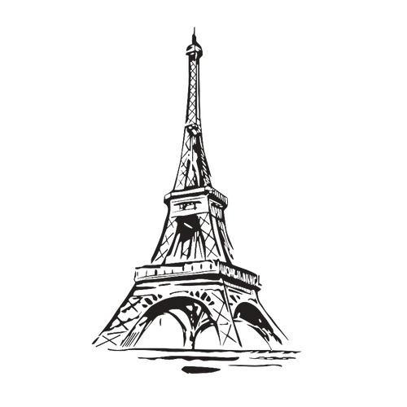

Sejarah Saksofon
Antoine-Joseph Sax atau yang lebih dikenal Adolphe Sax adalah
seorang penemu asal Belgia yang menciptakan saksofon pada tahun
1840'an di Eropa. Sebelum menemukan saksofon Sax merupakan seorang
musisi seruling dan klarinet. Sax tidak hanya menemukan saksofon,
dia juga merupakan penemu dari saxotromba, saxhorn, dan saxtuba.

Antoine-Joseph Sax lahir pada tanggal 6 November 1814 di Dinant,
Belgia. Walaupun namanya Antoine-Joseph, tetapi sejak dari kecil dia
sering dipanggil Adolphe Sax. Dia memiliki ayah yang bernama
Charles-Joseph Sax dan ibunya bernama Marie-Joseph. Kedua
orangtuanya merupakan desainer sekaligus pembuat alat musik. Jadi
bisa dibilang Sax meiliki hubungan yang erat dengan alat musik. Dari
kecil Sax sudah belajar bermain seruling dan klarinet, bahkan dia
sudah berada dikompetisi saat umurnya baru 15 tahun. Ketertarikannya
terhadap alat musik membuatnya pergi ke Royal Conservatory of
Brussels untuk mempelajari bagaimana menghasilkan suara yang baik
dari alat musik yang dia mainkan.
Setelah keluar dari Royal Conservatory of Brussels, Sax mulai
merancang alat musik baru dan inilah awal cikal bakal terciptanya
saksofon. Pada umurnya yang ke 24, Sax berhasil memperbaiki desiain
klarinet bass dan dia mematenkan hal tersebut. 4 tahun setelahnya
tepatnya pada tahun 1842 dia secara permanent pindah ke Paris. Sax
bekerja memperbaiki sekaligus melakukan pembaharuan terhadap
klarinet. Sax juga bekerja sebagai pembuat alat musik Ophicleide,
alat musik yang terbuat dari kuningan berbentuk kerucut. Keahliannya
inilah yang pada akhirnya menghasilkan sebuah alat musik bernama
'Saxophone'. 28 juni 1846 Sax berhasil mendapatkan 14 hak paten
terhadap desain dasar dari Saksofon mulai dari jenis Sopranino
hingga Contrabass. Awalnya Sax tidak hanya merancang Saksofon dari
nada dasar Bb dan Eb saja, tetapi ada juga Saksofon yang memiliki
nada dasar C dan F tetapi akhirnya yang menjadi standar Saksofon
adalah Bb dan Eb. Setiap Saksofon diberikan rentang nada sebesar 2
setengah oktaf.

Pada awalnya Saksofon hanya digunakan pada orkestra dan band militer
Prancis dan Inggris saja. Setelah itu Sax menerbitkan buku belajar
Saksofon dan menawarkan buku tersebut ke sekolah musik di Prancis,
Swiss, Belgia, Spanyol, dan Italia. Seiring berjalannya waktu
Saksofon mulai dikenal oleh banyak orang, dan pada tahun 1956 band
French Garde Republicaine menjadikan Saksofon sebagai instrumen yang
ditonjolkan. Namun pada akhir abad ke-19, minat komunitas terhadap
musik klasik mulai berkurang yang mengakibatkan pengajaran Saksofon
di Paris Conservatory diberhentikan. Tetapi pada saat yang bersamaan
Saksofon mulai terkenal di Amerika berkat Patrick Gilmore seorang
pemimpin band resimen ke-22 dan Edward A. Lefebre seorang pemain
Saksofon yang pindah pada tahun 1872. Hingga saat ini Saksofon masih
menjadi salah satu alat musik yang terkenal.